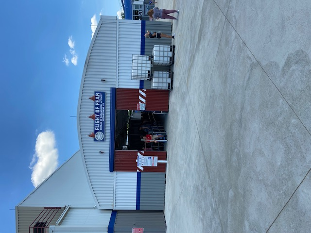
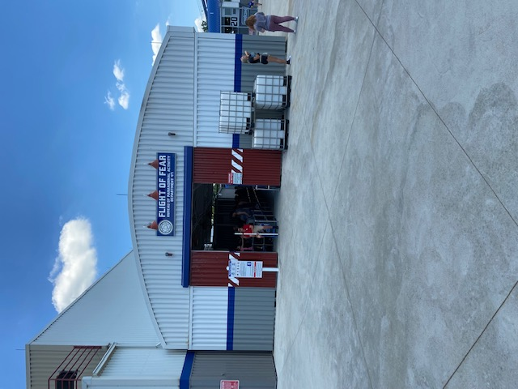

My First Time at Kings Island
On June 17, 2021, I visited Kings Island in Mason, Ohio for the first time. I left the park with 3 additions to my top 10 coasters, a new favorite woodie, and a #2 park. Needless to say, I was very impressed.
Overview
My mom and I visited Kings Island from opening until 6:30PM. We had pre-purchased Fast Lane Plus wristbands since we could only spend a day here. Skipping the lines was a lifesaver! The park was crowded and sunny. I got 4 rides on Orion, 3 on Diamondback and Banshee, 2 on Mystic Timbers and The Beast, and one ride on the remaining roller coasters except for Backlot Stunt Coaster (which was down every time we checked) and Great Pumpkin Coaster. I waited no more than 20 minutes for any ride, and usually less than 5 minutes. Typical for Cedar Fair standards, this park was charming, tidy, and easy to navigate. The coaster selection at Kings Island is stellar, although I wish they had an additional extreme launched roller coaster (and it doesn't take too much to outdo Flight of Fear). Ride operations were great, and associates were friendly although the nationwide labor shortage was evident. Seats were assigned on most coasters.
Coasters
Orion, the new-for-2020 B&M giga coaster, is my favorite at Kings Island. It's butter smooth and has a great combination of speed and airtime. I still prefer Millie for its raw speed, blistering pacing, and longer duration. I was more blown away initially by Raging Bull than Orion, but I had much higher expectations for the latter. With 4 rides on each coaster, I'm fairly certain that Orion is superior. The most intense ride I got was in the front right seat, but I also rode in rows 2, 3, and 7. Orion deserves more love in the coaster enthusiast community! Its drop is one of the best in the world, the wave turn is fun and unique, the airtime delivers on each hill, and the helix, sometimes dubbed Orion's Belt, is more forceful than anticipated. This ride is a tad short, but is smooth, has awesome clamshell restraints, features perfect elements and even has decent theming.
Banshee, another kick-butt B&M, is a close second favorite coaster at the park, and also lands in my top 10. This coaster has the perfect combination of intensity, pacing, and inversions. Also, Banshee has a really cool drop and the vest restraints that I like a lot. There is a rattle on this coaster, but it didn't cause a problem for me because the restraints prevented any headbanging. Raptor's roughness was far worse. I prefer the left seat on Banshee, because the two times I rode on the right, I got very woozy going through the in-line twist. I had similar experiences on The Swarm and X-Flight. Both Orion and Banshee are examples of coasters with excellent layouts that balance grace and intensity.
I thought The Beast was great after my first ride in the middle, and amazing after my second ride in the back. Move over, Shivering Timbers! The Beast has an epic length of 7,359 feet, some fun tunnels, a brilliant setting in the woods, and raw speed which parallels that of Millennium Force. I loved zooming through the woods, and the best part of the ride was the finale after the second lift hill. This coaster is bumpy and lacks airtime, but it is still my new favorite woodie because of its relentless speed tearing through the trees.
I found another big B&M, Diamondback, to be very enjoyable. Just like the other 2 B&M's at Kings Island, this ride features a great drop and some of the best restraints around. Diamondback has a bunch of floater airtime hills and a fun splashdown at the end. However, the train shook me pretty hard at the valley of each hill, and the layout is a little too repetitive for my liking. This coaster is one of the roughest B&M's I've ridden, but the amount of quality floater airtime makes up for it. I prefer the wing seats to the inner seats.
GCI's Mystic Timbers rounds out the "big 5" for me at Kings Island, and is the last coaster at the park to make my Top 50 Coasters. This coaster is very aggressive and gave me the same out-of-control feeling as Maverick. I prefer Maverick though, because of its launches and inversions. I also prefer Boardwalk Bullet to Mystic Timbers for its drop and compactness. Generally I don't like abrupt airtime and quick direction changes. However, there were a lot of airtime moments on this coaster that I did like, and I was also fond of the secluded settimg and the shelter provided by the shed on the brake run. Mystic Timbers has terriffic pacing, but I just didn't love what it actually did with that pacing most of the time.
Just missing my top 50 is Flight of Fear, which was the best surprise of the day considering that I disliked my '07 ride on Poltergeist at Six Flags Fiesta Texas so much. I loved the launch, inversions, theming, and air conditioning. I was not a fan of the foot-squishing restraints and the MCBR that killed the pacing of this coaster.
The Bat was my mom's favorite ride of the day, and she actually had ridden this coaster in the 1980's. I liked The Bat's pacing, swinging, and woodsy setting. Unfortunately, it was shorter and less thrilling than I would've liked. And yes, there is a big hike to get to the station.
One of the park's original coasters, Racer, was decent. I rode the red side. The ride out was smooth and had some good airtime, but the trip back to the station was rougher and forgettable. This coaster, The Bat, and Backlot Stunt Coaster are great in-between coasters.
My first and roughest ride of the day was on Vekoma's Invertigo. I disliked this version more than the sit-down Boomerangs, and a lot more than the giant inverted boomerang model. I even have this coaster ranked lower than most SLCs. The head banging in the second car on Invertigo was that bad. Coming from an inversion lover, the most pleasant parts were the drops. I hope this coaster is the next to leave Kings Island.
From best to worst, the remaining 3 roller coasters I rode at Kings Island were Adventure Express, Woodstock Express, and Flying Ace Aerial Chase.
Other Rides
In addition to coasters, Kings Islad has some flat rides and water rides. Their Planet Snoopy area looked really good too. I didn't try any flat/water/kidedie rides. My mom insisted that we do the train ride, K.I. & Miami Valley Railroad. It picked up near Mystic Timbers, had some nice views of Diamondback, and stopped once near the waterpark. This attraction was a nice break from the sunshine and coaster-riding.
Food & Merchandise
My mom and I had soft pretzels and ice cream (from Chick-fil-A since my pitch for blue ice cream was turned down) in the park. Both food lines took a long time and so-so employees ran the shops. We opted to eat dinner after we left Kings Island. I bought a t-shirt with my 5 favorite coasters on it from Coaster Connection. I thought their selection was just okay.
Cost
I took advantage of Kings Island's 2020 Presidents' Day sale and bought two admission + Fast Lane Plus tickets and a parking pass for $166 total. I saved at least $110 with the combos instead of purchasing Fast Lane separately. Cedar Fair was kind to let 2020 ticketholders like me use their tickets this year due to the pandemic. Even if I had paid full price for FL+, skipping the lines would've been worth every cent. Food and my t-shirt were marked up 100%. My mom and I ate breakfast at a Chick-fil-A near our hotel the next day and discovered that menu items cost over twice as much at the park. Also, Kings Island says that purchasing two water bottles for $6.50 is a "good deal." Yikes.
Photos
These photos were taken by me or my mom. Please credit this website if used.


 
